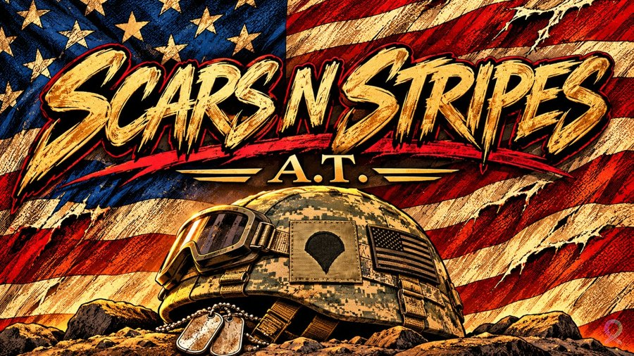

Track 09 · My Turn
Scars N Stripes
For the ones in uniform: every branch, every hometown, and a special salute to the Eleven Bravos, the Army infantry, Queen of Battle. Four thirty in the morning at Benning, twelve months in the sand, the brother on your left and the sister on the radio. The blue star in the window, the kid in his daddy's old cap, the ones who came home laughing, the ones who came home quiet, and the ones who came home under a flag. And a plain ask: school and a clinic is a start, not the whole. Give them homes, give them work, give them care when they call.
 Watch the official video
Watch the official video
Lyrics
[Intro]
Yeah...
This one's for the ones in uniform
Every branch, every hometown
And my eleven bravos... Follow me
[Verse 1]
Four thirty in the morning and the sky still black,
Eighty pounds of everything strapped across the back,
Red clay on the boots from the Benning ground,
Queen of Battle, blue cord, they don't make a sound,
Eleven Bravo, first in, last one to leave,
Sand in the teeth and the heat you can't breathe,
Twelve months out, missin' birthdays and graduations,
Holdin' up a picture through a bad connection,
Ain't no cameras on the convoy, ain't no crowd in the stands,
Just a brother on the left with your life in his hands,
Sister on the radio, keepin' the line clear,
Everybody's somebody's baby over here,
They don't do it for the medal, don't do it for the fame,
Do it for the one beside 'em, know 'em all by name,
So when you see that flag wave, don't just see the stars,
See the stripes on the shoulder, see the scars
[Hook]
These are scars and stripes, every one of 'em earned (ooh)
Blood, sweat and tears where the desert sun burned (mm)
Stand tall for the ones who stood up for me (stand tall)
Scars and stripes, wavin' over the free (ooh)
(Scars N Stripes) For the ones who went
(Scars N Stripes) And the ones who came home different
[Verse 2]
Blue star in the window on a Bronx avenue,
Mama keep the porch light on, she prayin' for you,
Little man in the doorway in his daddy's old cap,
Countin' every single day 'til his hero come back,
Wife workin' doubles, raisin' three on her own,
Husband on a carrier a ocean from home,
Army, Navy, Air Force, Marines,
Coast Guard on the water, every one of 'em seen,
From the farm and the city and the reservation,
Every color, every faith, one oath to the nation,
Some came back laughin', some came back quiet inside,
Some came back carryin' a war that they can't hide,
And some came back folded in a flag on a plane,
Gold star on the window and a stone with a name,
So the least we can do is say it loud and say it right,
Every one of them paid for the peace we got tonight
[Hook]
These are scars and stripes, every one of 'em earned (ooh)
Blood, sweat and tears where the desert sun burned (mm)
Stand tall for the ones who stood up for me (stand tall)
Scars and stripes, wavin' over the free (ooh)
(Scars N Stripes) For the ones who went
(Scars N Stripes) And the ones who came home different
[Bridge]
Oh, say can you see 'em
Standin' in the rain for us
Every flag on every porch got a name on it
Come home safe, come home safe to me
[Verse 3]
"Thank you for your service," then they hand you a number,
Six months for a chair while the nightmares get under,
Held the line for the block, now you can't get a lease,
Kept the whole world quiet, can't get a night of peace,
School and a clinic, that's a start, not the whole,
You gave a body and a mind and a piece of your soul,
So give 'em homes, give 'em work, give 'em care when they call,
Give the ones who came back broken a hand, not a wall,
Not a hashtag in November, show the love all year,
Every vet on the corner got a story to hear,
Pull a chair up, pour a cup, let 'em tell it, let 'em breathe,
Some wear ribbons on the chest, all carry somethin' underneath,
Eleven Bravo, Queen of Battle, I salute you from the heart,
You was first into the fight, put you first in line to start,
Scars and the stripes, that's the flag in my eyes,
Every one of y'all a hero, and a hero never dies
[Final Hook]
These are scars and stripes, every one of 'em earned (ooh)
Blood, sweat and tears where the desert sun burned (mm)
Stand tall for the ones who stood up for me (stand tall)
Scars and stripes, wavin' over the free (ooh)
(Scars N Stripes) For the ones who went
(Scars N Stripes) And the ones who came home different
(Scars N Stripes) Welcome home, we see you now (ooh)
[Outro]
To every soldier, sailor, airman, Marine and Coast Guard
To my eleven bravos
Come home safe
Hooah
Written by Grey Beard and A.T. ℗ & © 2026 Threadia AI, Inc. All rights reserved.